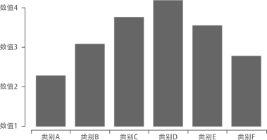
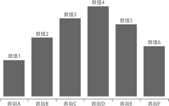
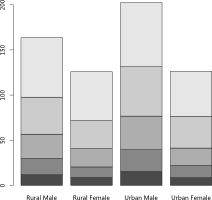
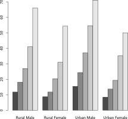

柱状图
柱状图（bar chart）用于呈现频数或百分比。
基本要素
柱状图的基本要素包括三个：
- 水平分段：先按照数据的分类数目给水平轴分段。
- 竖直数值：确定单位竖直高度的代表的数值，并绘制标度轴。
- 绘制柱图：按照数据绘制竖直柱。

R 可以直接绘制柱状图：
变换图形
数值轴变化

媒体上常见的柱状图通常没有纵轴标度，而是直接将数值标记在竖直柱的顶端或顶端附近。
R 需要做些调整：
bar.plot <- barplot(vector, yaxt="n")
text(bar.plot, vector, labels=bar.label, pos=2)
pos 用于调整数值显示的相对位置。
纵横轴交换
柱状图的柱可以绘制为水平柱，由横轴标度数值。
barplot(vector, horiz=TRUE)
衍生图形
累加柱状图
以 R 的示例生成的图为例展示累加柱状图：

数据需是 matrix 类对象。
比较柱状图
以 R 的示例生成的图为例展示比较柱状图：

barplot(matrix, beside=TRUE)